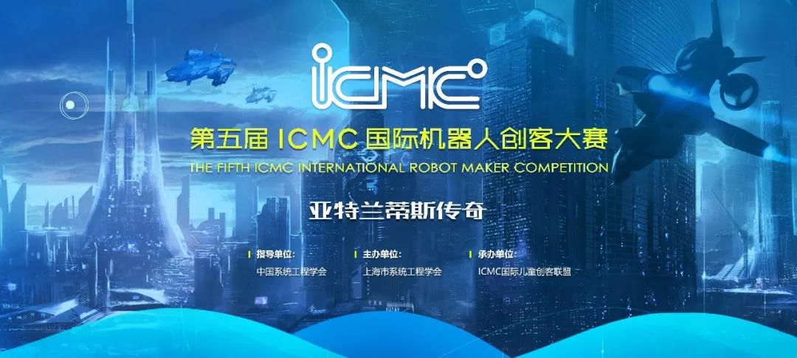
2019第五届ICMC国际机器人创客大赛又将拉开帷幕。ICMC是针对3-12岁少年儿童，以个人创客技能挑战为特色的，以激发选手科技创造力为目标的校外机器人创新活动。
2015年创办至今，ICMC以亚洲最大的上海科技馆为基地，以独特的赛题设计和规范的赛事管理迅速发展，已经成长为国内极具影响力的少年儿童机器人科创展示交流活动。
2019ICMC主题：亚特兰蒂斯传奇
传说在一万多年前的地球上，有一个高度文明的国度叫亚特兰蒂斯，科技发展水平甚至超越了现在的世界。可惜后来亚特兰蒂斯毁灭于一场特大洪水，消失在了浩瀚的海洋深处，直到今天，人们也一直在努力寻找他们留下的痕迹。这次比赛，就让我们走进传说，化身一位亚特兰蒂斯的小小工程师，去完成一项项神秘国度的有趣任务！
勘探队在一座岛上发现了珍贵的矿场，但是矿场位于一座山崖的顶部，需要你帮助勘探队修建一座能够到达3个矿区的工作楼梯。
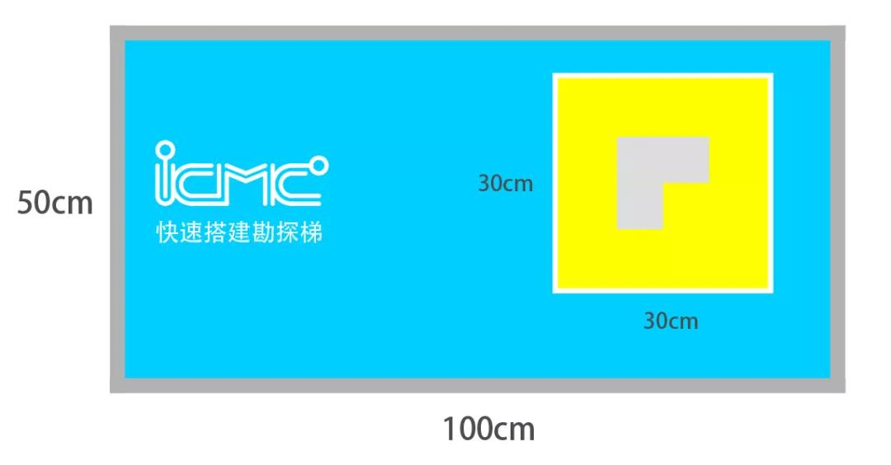
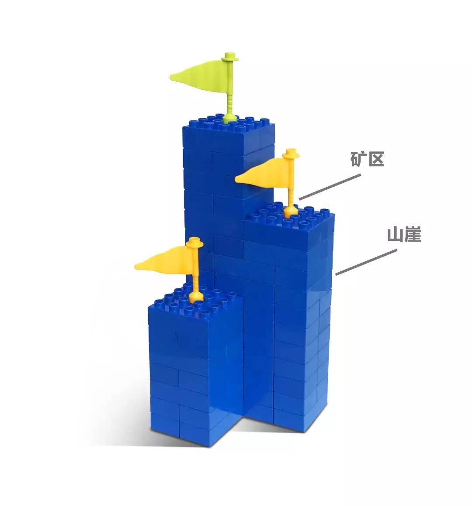
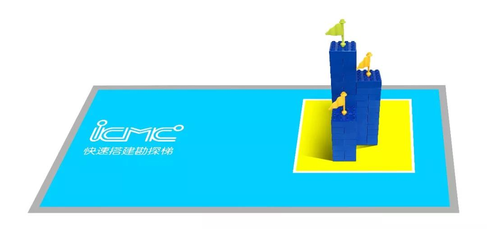
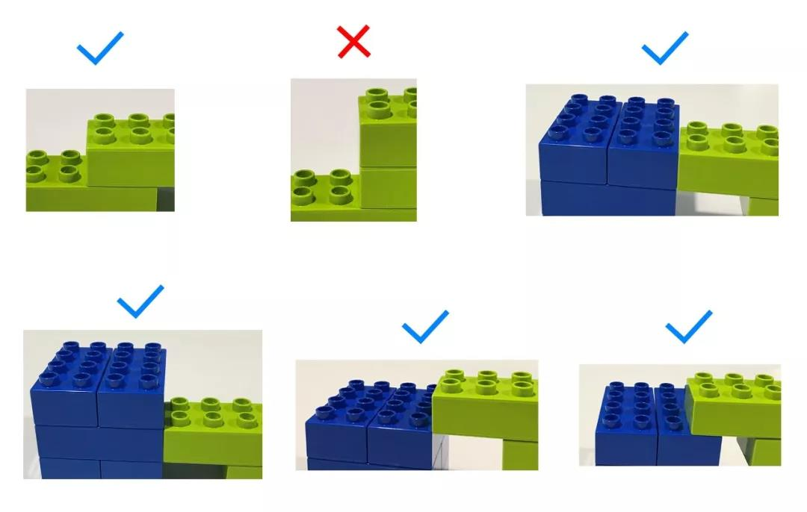
选手使用给定砖块制作楼梯、从地面通达3个矿区。
现场提供松散状态的乐高大颗粒2*4厚砖40块，2*2厚砖30块。
搭建限时5分钟，基础分为500分，每用时1秒扣除1分，搭建完成后，楼梯每合规到达一个矿区，加200分。每位选手有两次机会，取得分高的一次。
能源中心的安全阀出现了故障，需要使用工具对多个调节器进行调节。请你制作一个工具来加快调节速度。
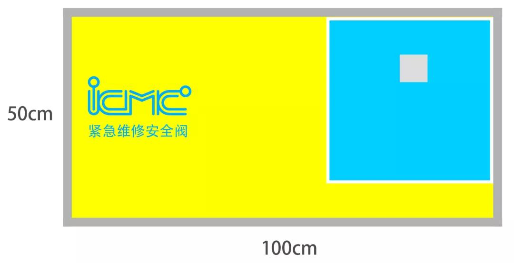
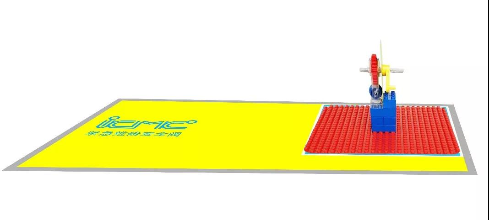
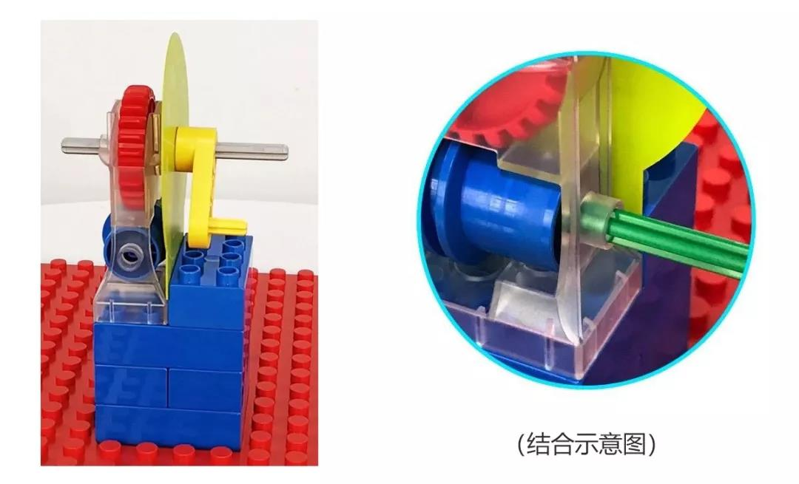
选手使用零件制作加速装置与蜗杆箱中的蜗杆组合、使刻度盘上的曲柄以最快的速度转动五圈。
现场提供乐高9656器材1套。
搭建限时5分钟，搭建基础分为500分，每用时1秒扣除1分。操作基础分1000分，每用时1秒扣除20分。选手有2次操作机会，取得分高的一次。（总分=搭建分+操作分）
物流中心需要经常搬运物料桶，为了提高效率，希望你制作一个电动的机械抓手，可以很好的帮助工作人员快速搬运这些物料桶。
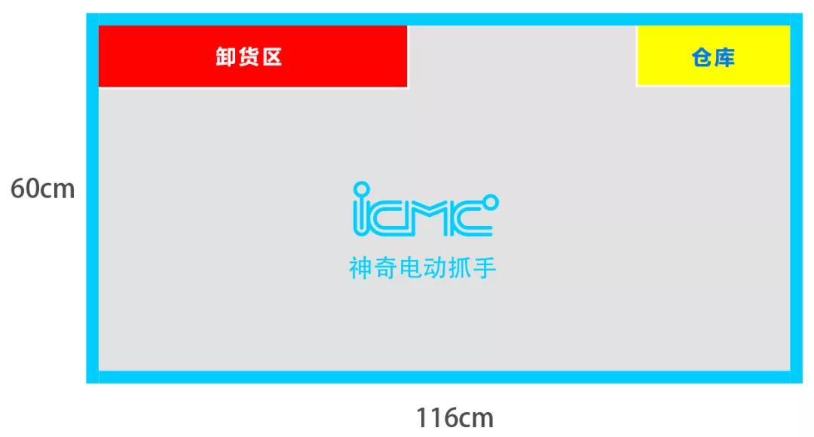
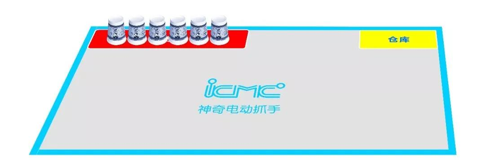
（初始状态）
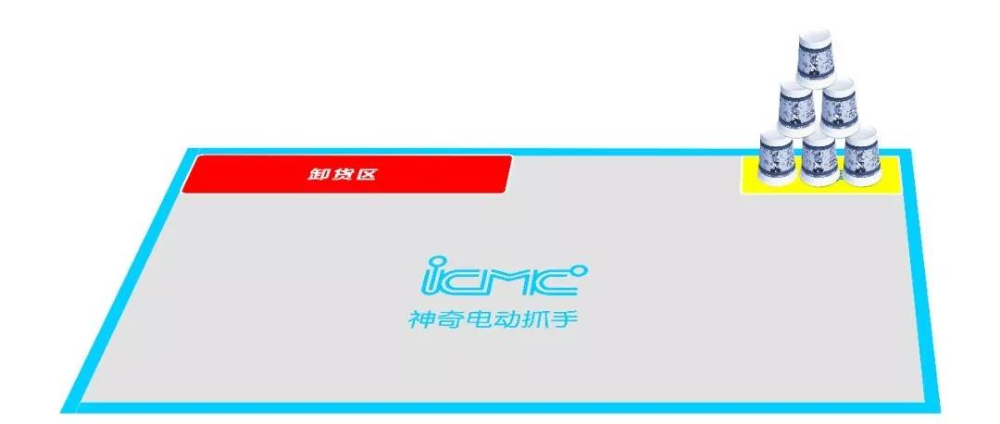
（完成状态）
选手使用零件制作以马达驱动为唯一动力来源的机械抓手堆叠物料桶。
（物料桶为常规228ml规格的一次性纸杯）
现场提供乐高9686器材一套。
搭建限时15分钟，搭建基础分为1000分，每用时1秒扣除1分。操作限时2分钟，基础分1000分，每用时1秒减少10分。选手有2次操作机会，取得分高的一次。（总分=搭建分+操作分）
核电站需要不定期向几个燃料池投放对应规格的能量棒，为了安全，人不能进入。请你设计一个智能机器人，可以自动分类投放能量棒。
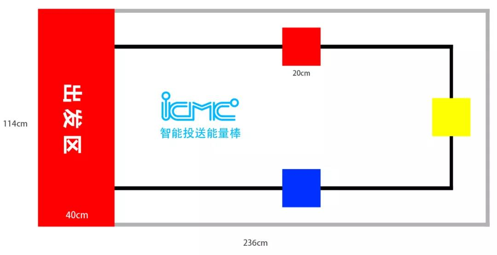
选手携带电脑，现场独立进行编程，使机器人完成投送能量棒的任务。
所用零件及笔记本电脑自带，零件必须仅来自乐高45544及45560器材。现场提供红、黄、蓝三种颜色能量棒（乐高2*4大颗粒厚砖）各一枚。
比赛总时间限时15分钟，基础分1000分。每用时1秒扣1分。总得分=基础分+最大运输得分
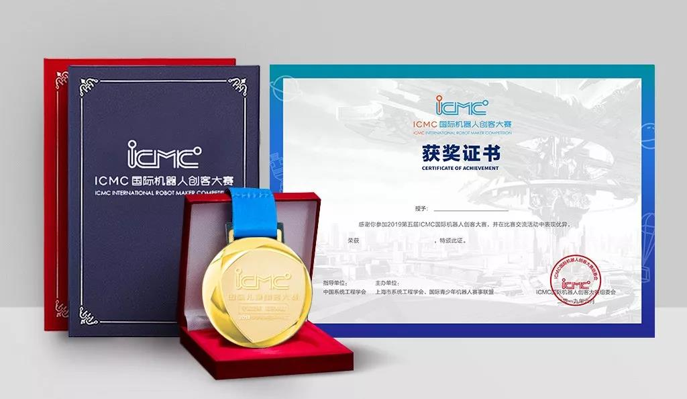
优胜奖：授予奖状证书